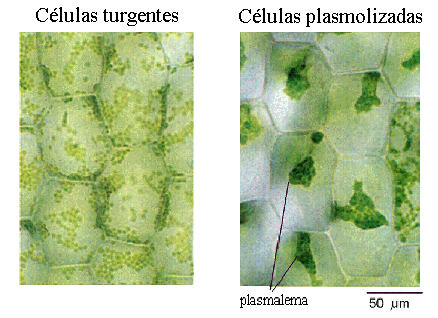

<html>
<head>
<title>MECANICA DE FLUIDOS, MECANISMOS DE TRANSPORTE, G20_U2 transp_11, fisica online, ejercicios resueltos</title>
<meta http-equiv="Content-Type" content="text/html; charset=UTF-8">
<meta name="keywords" content="problemas resueltos, ejercicios resueltos, cbc, fisica, biofisica, fluidos, liquidos, gases, bernoulli, poiseuille, viscosidad, ideales, viscosos, humedad, difusion, osmosis, nomesalen, no me salen, ricardo cabrera" />
<meta name="description" content="Ejercicios y problemas resueltos, y apuntes teóricos de Fluidos, mecanismos de transporte de fluidos" />
<link rel="stylesheet" href="win_ie.css">
<style type="text/css">
<!--
.style1 {
	color: #3F6386;
	font-weight: bold;
}
.Estilo3 {color: #3F6386}
.Estilo16 {font-size: 16px}
.Estilo25 {
	font-family: Verdana, Arial, sans-serif;
	font-weight: bold;
	font-style: italic;
}
.Estilo28 {font-family: "Times New Roman", Times, serif;
	font-weight: bold;
	font-style: italic;
	font-size: 20px;
}
-->
</style>
</head>

<body bgcolor="#FFFFFF" text="#000000" alink="#000000" leftmargin="0" topmargin="0" marginwidth="0" marginheight="0">
<table align=center width="600" border="0" cellspacing="0" cellpadding="0"> 
  <tr bgcolor="#000000" align="right"> 
<td></td></tr> <tr bgcolor="#BB0000" valign="middle" align="left"> 
<td class="bodytext" height="20"><TABLE WIDTH="100%" BORDER="0" CELLSPACING="0" CELLPADDING="0">
  <TR ALIGN="center" CLASS="menuitem">
    <TD WIDTH="43" height="19" CLASS="menuitem"><A HREF="../../index.html" CLASS="menuitem">&nbsp;<B>home</B>&nbsp;</A></TD>
    <TD WIDTH="5" CLASS="menuitem"><FONT COLOR="#000000">|</FONT></TD>
    <TD width="119" CLASS="menuitem"><strong><a href="index_hdinam.html" class="menuitem">más de hidrodinámica </a> </strong></TD>
    <TD width="9" CLASS="menuitem"><FONT COLOR="#000000">|</FONT></TD>
    <TD width="127" CLASS="menuitem"><strong><a href="../../intro_NMS.html" class="menuitem">otros temas de F&iacute;sica</a></strong></TD>
    <TD width="10" CLASS="menuitem"><FONT COLOR="#000000">|</FONT></TD>
    <TD width="160" CLASS="menuitem"><strong><a href="../../lista_ciruela.html" class="menuitem">lecciones del maestro Ciruela </a></strong></TD>
    <TD width="8" CLASS="menuitem"><FONT COLOR="#000000">|</FONT></TD>
    <TD width="67" CLASS="menuitem"><strong><a href="../../lista_tonterias.html" class="menuitem">tonter&iacute;as</a></strong></TD>
    <TD WIDTH="7" CLASS="menuitem"><a href="../energia/index_energia.html" class="menuitem"></a><FONT COLOR="#000000">|</FONT></TD>
    <TD WIDTH="48" CLASS="menuitem">&nbsp;<B><FONT FACE="Arial, Helvetica, sans-serif"><A HREF="mailto: ricuti@gmail.com" CLASS="menuitem">@</A></FONT><A HREF="../../index.html" CLASS="menuitem"></A></B>&nbsp;</TD>
  </TR>
</TABLE></td></tr> <tr> <td class="bodytext" height="19"><p></td></tr> 
<tr align="center"> <td height="1482"> <table width="600" border="0" cellspacing="0" cellpadding="0"> 
<tr class="bodytext"> <td valign="top" width="594" height="1129"> 
<table width="600" border="0" cellspacing="0" cellpadding="0"> <tr> 
  <td height="74" valign="middle" bgcolor="#D7FFFF" class="bodytext"><span class="bodytext"><strong><em><strong><em><strong><strong>&#160; &#160;</strong></strong></em></strong></em>NO ME SALEN<br>
</strong></span><span class="Estilo3"><em class="bodytext "><strong><em><strong><em><strong><strong>&#160; &#160;</strong></strong></em></strong></em>(<strong>PROBLEMAS RESUELTOS   DE BIOF&Iacute;SICA DEL CBC</strong>)</strong></em></span><br>
      <span class="titulograndegris Estilo16"><strong><em><strong><em><strong><strong>&#160; &#160;</strong></strong></em></strong></em>MECANISMOS DE TRANSPORTE </strong></span></td>
  <td class="bodytext" rowspan="3" height="74" width="7">&nbsp;</td>
  <td class="bodytext" colspan="2" height="74" rowspan="3" valign="top" width="86"> 
<p></p></td></tr>
  <tr>
    <td height="18" bgcolor="#FFFFFF" class="bodytext">&nbsp;</td>
  </tr> 
<tr> <td height="108" valign="top" class="bodytext"><table width="100%" border="0" cellspacing="0" cellpadding="0">
  <tr>
    <th width="31%" align="left" valign="top" scope="col"></th>
    <th width="69%" align="left" class="bodytext" scope="col">11 - Las células vegetales poseen una membrana citoplasmática semipermeable (permeabilidad selectiva al agua). Se denomina plasmólisis  al proceso de deshidratación y reducción de  tamaño de las células vegetales. Para que ese  fenómeno sea posible habría que sumergir una  muestra de células vegetales en:</th>
  </tr>
</table>    <p><strong><br>
  </strong></p>    </td>
  </tr>
<tr>
  <td height="120" valign="middle" class="bodytext"><p><strong> a) un medio hipotónico para que se deshidrate por ósmosis directa.<br>
    b)  un medio hipertónico para que se deshidrate por ósmosis directa.<br>
    c)  un medio isotónico para que se deshidrate  por ósmosis directa.<br>
    d)  agua destilada para que se deshidrate por  ósmosis directa.<br>
    e)  agua destilada y aplicando una presión  externa para que se deshidrate por ósmosis  inversa.<br>
    f)  un medio isotónico y aplicando una presión  externa para que se deshidrate por ósmosis  inversa.</strong></p></td>
  <td class="bodytext">&nbsp;</td>
  <td colspan="2" valign="top" class="bodytext">&nbsp;</td>
</tr>
<tr>
  <td height="240" valign="middle" class="bodytext"><p>Si resolviste el <a href="G20_Fludin_transp_09.html" target="_blank">ejercicio anterior</a> este te tiene que resultar muy sencillo. Vamos con las opciones de a una:</p>
    <p><strong>a) un medio hipotónico para que se deshidrate por ósmosis directa</strong>. Falso. Sumergidas en una solución hipotónica las células comenzarán a recibir agua en su interior, se hincharán, aumentarán la turgencia y como las paredes impedirán que se hinchen demasiado aumentará la presión en su interior. Es lo contrario de la plasmólisis.</p>
    <p><strong> b)  un medio hipertónico para que se deshidrate por ósmosis directa</strong>. Esta es la correcta. El agua comenzará a salir del interior de las células y cada una quedará achicharrada dentro de su celda. Mirá la foto: el color más oscuro de las células contraídas se debe a que el material interior ha quedado más compactado, más concentrado.<br>
  </p></td>
  <td class="bodytext" height="240">&nbsp;</td>
  <td class="bodytext" colspan="2" height="240" valign="top">&nbsp;</td>
</tr>  
<tr>
  <td height="78" align="center" class="bodytext"></td>
  <td class="bodytext">&nbsp;</td>
  <td width="86" colspan="2" valign="bottom" class="bodytext"><p></td>
</tr>
<tr>
  <td height="58" align="center" class="epigrafe">Paa entender esta imagen tenés que saber que las células vegetales (a diferencia de las animales) tienen pared celular (no solamente membrana celular). Esas paredes forman estructuras semirígidas, como compartimientos, dentro de las cuales se hallan laas células.</td>
  <td class="bodytext">&nbsp;</td>
  <td colspan="2" valign="bottom" class="bodytext">&nbsp;</td>
</tr>
<tr>
  <td height="248" align="left" class="bodytext"><p><strong>c)  un medio isotónico para que se deshidrate  por ósmosis directa.
   </strong>Falso. En un medio isotónico las células no pierden ni ganan agua.</p>
    <p><strong> d)  agua destilada para que se deshidrate por  ósmosis directa.</strong> Ahua destilada es el medio más hipotónico que podrías encontrar, estás en la misma situación que la opción a) pero más violenta.</p>
    <p><strong> e)  agua destilada y aplicando una presión  externa para que se deshidrate 
      por ósmosis  inversa.</strong> No se me ocurre ningún mecanismo para hacer eso, es muy loco. Teóricamente es posible, pero lo más práctico sería pegarle un martillazo a la célula... horrible.</p>
    <p><strong> f)  un medio isotónico y aplicando una presión  externa para que se deshidrate por ósmosis  inversa.</strong> Bueno, lo mismo acá.</p></td>
  <td class="bodytext">&nbsp;</td>
  <td width="86" colspan="2" valign="bottom" class="bodytext">&nbsp;</td>
  </tr>
<tr>
  <td height="78" align="center" class="bodytext"><table width="86%" border="0">
    <tr>
      <td height="46" align="center" bgcolor="#CCCCCC"><p class="bodytext"><strong>b)  un medio hipertónico para que se <br>
        deshidrate por ósmosis directa</strong>.</p></td>
      </tr>
  </table></td>
  <td width="7" class="bodytext">&nbsp;</td>
  <td width="86" colspan="2" valign="bottom" class="bodytext">&nbsp;</td>
  </tr>
<tr>
  <td height="18" bgcolor="#FFFFFF" class="bodytext"><strong>Comentario</strong>: Exactamente el mismo proceso de plasmólisis que se describe acá se utilizó por siglos para conservar alimentos antes de que existiesen las heladeras, logrando que las bacterias -que se quieren comer nuestra comida- mueran achicharradas por deshidratación. La salmuera&nbsp;es un ejemplo de esto.</td>
  <td class="bodytext">&nbsp;</td>
  <td width="86" colspan="2" valign="bottom" class="bodytext">&nbsp;</td>
</tr>

<tr>
  <td height="18" align="center" bgcolor="#FFFFFF" class="bodytext"><p>&nbsp;</p></td>
  <td class="bodytext">&nbsp;</td>
  <td width="86" colspan="2" rowspan="3" valign="bottom" class="bodytext"></td>
  </tr>
<tr>
  <td bgcolor="#FFFFFF" class="bodytext">&nbsp;</td>
  <td class="bodytext">&nbsp;</td>
  </tr>

<tr> <td align="center" valign="middle" bgcolor="#CCCCCC" class="bodytext"><table width="94%" border="0">
  <tr>
    <td class="epigrafe">Algunos derechos reservados. Se permite su reproducci&oacute;n citando la fuente. Se permite compartir el material prest&aacute;ndolo, regal&aacute;ndolo, coment&aacute;ndolo, unt&aacute;ndolo con dulce de leche o mermelada de ar&aacute;ndanos. &Uacute;ltima actualizaci&oacute;n jul-22. Buenos Aires, Argentina.</td>
  </tr>
</table>  </td>
  <td class="bodytext" width="7">&nbsp;</td>
  </tr> 
<tr> <td height="18" class="bodytext">&nbsp;</td><td class="bodytext" width="7">&nbsp;</td>
<td class="bodytext" colspan="2" width="86">&nbsp;</td>
</tr> 
</table></td></tr> </table>
<p></td></tr> 
<tr> <td class="bodytext"><p></td></tr> 
</table>
</body>
</html>
